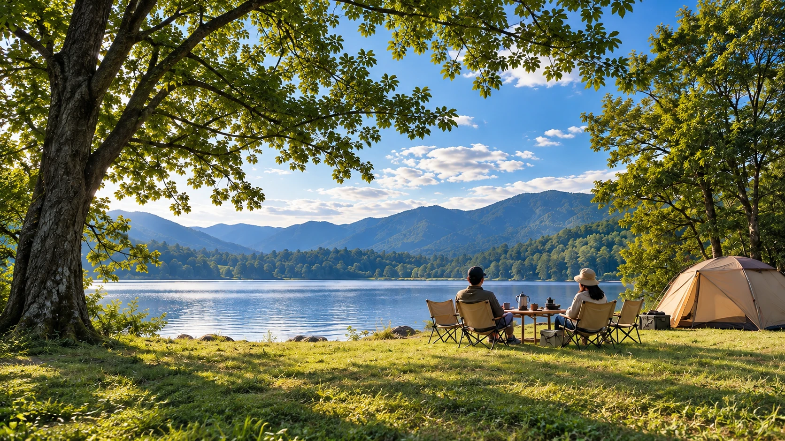

CHOOSE A GUIDE
知りたいところから、準備を始める。
一般的な持ち物一覧をそのまま買うのではなく、誰と・いつ・泊まるか・何をしたいかで必要条件を変えるための読みものです。

BEGINNER GUIDE
キャンプ初心者の準備
道具を検索する前に、休日の形を決める。すると「本当に必要なもの」が見えやすくなります。

BEGINNER GUIDE
キャンプに必要なもの
「初心者セット」を丸ごと買うより、泊まる・食べる・過ごすの順に不足を確認します。

BEGINNER GUIDE
キャンプ初心者の予算
安全と宿泊の基本を残し、レンタル・手持ち・次回へ回すものを分けます。

BEGINNER GUIDE
ファミリーキャンプ初心者ガイド
予定を詰め込まず、設営・食事・寝る時間に余裕をつくるところから。

BEGINNER GUIDE
初心者のテント選び
泊まる人数、荷物、移動手段、設営する人。使う場面から必要条件を決めます。

BEGINNER GUIDE
キャンプ初心者の寝袋選び
見た目や価格より先に、使う日の気温とメーカーが示す温度情報を確認します。

BEGINNER GUIDE
キャンプBBQの持ち物
火を起こす道具だけでなく、保冷・衛生・片付けまで一つのセットとして考えます。

BEGINNER GUIDE
キャンプで焚き火を始める準備
焚き火台を買えば終わりではありません。地面の保護、手元の安全、消火までを一つの装備として考えます。

BEGINNER GUIDE
キャンプの朝ごはん
おいしさだけでなく、準備時間・洗い物・火器を片付ける時間まで含めて考えます。

BEGINNER GUIDE
キャンプ料理初心者ガイド
クッカーを集める前に献立を決める。必要な道具だけを持っていけば、荷物も洗い物も減ります。
MAKE YOUR CAMP
読むより先に、つくってみても大丈夫。
7つの質問に答えると、あなたの条件に合わせて必要な道具と過ごし方を組み立てます。
キャンプをつくる →